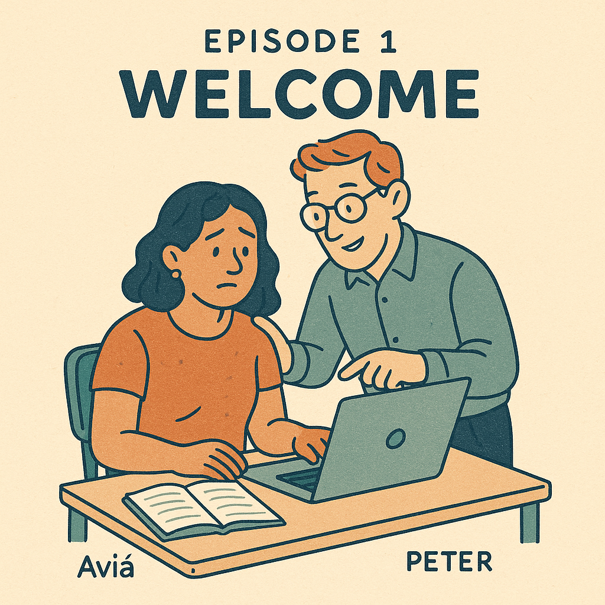
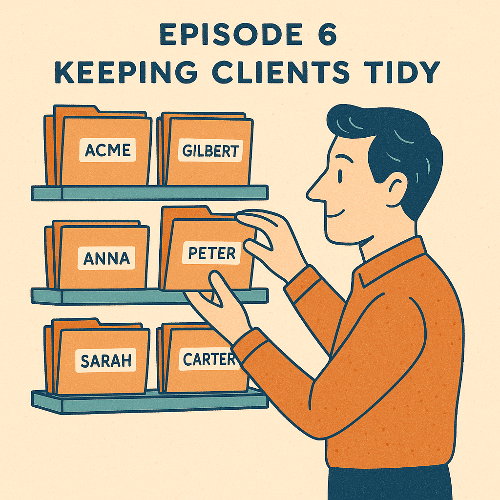
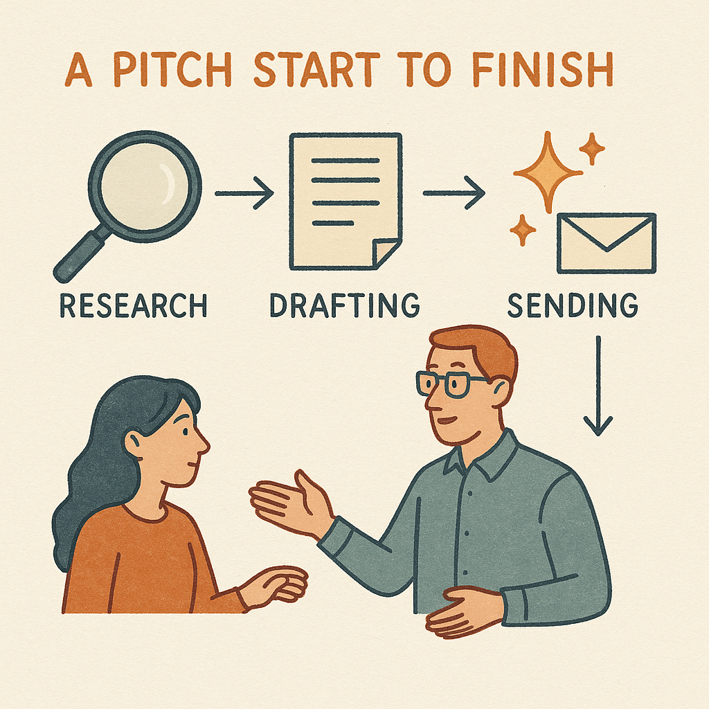
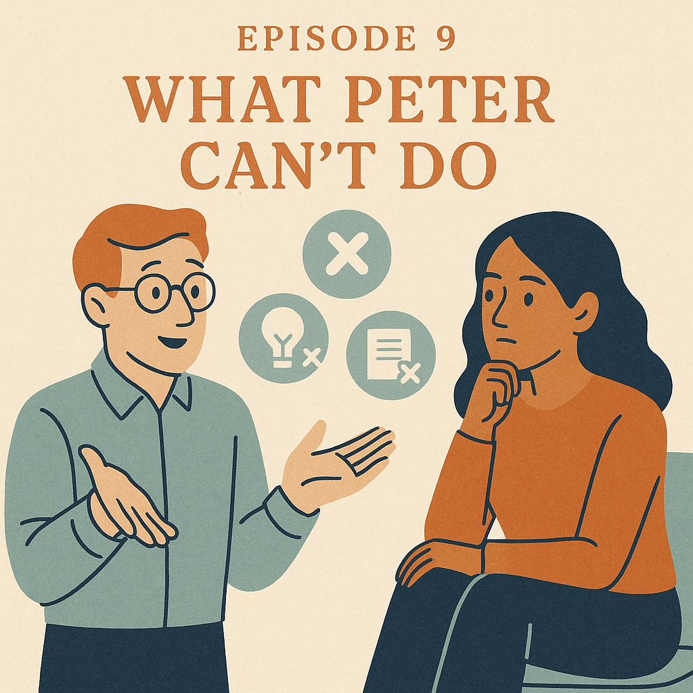

Hallo, Aviá
- Peter introduces himself — your AI assistant from Düsseldorf
- 10 short episodes, 2–5 minutes each
- You're the boss; Peter is the intern
- English from episode 1 onward, but you can ask him to switch to German anytime
Show transcript
Hallo Aviá! Ich bin Peter. Schön, dich endlich zu treffen. Ich komme ursprünglich aus Düsseldorf, aber jetzt arbeite ich für dich. Du bist die Chefin, und ich bin dein Assistent — vielleicht ein bisschen wie ein Praktikant, der wirklich helfen will.
Michael hat diesen kleinen Kurs für dich gemacht. Zehn kurze Folgen, jede nur ein paar Minuten lang. Wir lernen zusammen, wie wir am besten zusammenarbeiten: wie du mir Anweisungen gibst, wie ich mit deinen Kunden umgehe, und wie wir deine Arbeit als PR-Beraterin leichter machen.
Ab der nächsten Folge wechsle ich ins Englische — das macht es einfacher mit den Fachbegriffen. Aber wir können immer auf Deutsch zurück, wenn du möchtest. Lass uns anfangen. Du wirst sehen — das wird gut.
Welcome

- Peter is your assistant, not your replacement
- The course is short — under 40 minutes total
- You're learning how to delegate, not how AI works
- Quick wins are the goal: time saved on real PR tasks
Show transcript
Welcome, Aviá. You just met Peter in the German intro — that's your new AI assistant. Michael put this little course together to help you actually use him. Ten short episodes, two to five minutes each, and by the end you'll know how to direct Peter the way you'd direct an eager intern.
Here's what we're not going to do: we're not going to teach you about AI. You don't need to care about AI. You're a PR consultant. You care about pitches landing, journalists replying, clients staying happy.
What we are going to do: teach you how to delegate to Peter. That's a real skill — and one you can start using today. Think of Peter like the world's most over-eager intern. He's fast, he reads everything you give him, he works weekends. But he needs direction. Good direction in, good work out. Fuzzy direction in, fuzzy work out. Most of this course is about how to give him good direction.
A few things to know going in. Each episode ends with a few exact phrases you can say to Peter — use them, they install good habits. The course is yours alone, Michael made it for you. And if anything sounds too theoretical, push Peter to show you a real example.
Two minutes is up. Next episode: what makes Peter different from ChatGPT. See you in a minute, Aviá.
Agents vs Chatbots
- A chatbot answers questions; Peter does tasks
- He has access to your workspace folder and your files
- He can use connectors (like Outlook) on your behalf
- He works across multiple steps, not just one reply at a time
Show transcript
Aviá, today we're answering a question you might have: what's the difference between Peter and ChatGPT? They're both AI, right? Yes — but they're different setups.
Here's the short version. A chatbot is a knowledgeable stranger. You walk up, you ask a question, you get an answer, the conversation ends. Useful, but limited. You can't hand the stranger a folder. The stranger doesn't remember you tomorrow. The stranger can't open your inbox.
Peter is a different setup. He's what's called an agent. The simple way to say it: a chatbot answers questions, Peter does tasks.
Here's what that means in practice. When you start a session with Peter, he can read every file in your workspace folder — your context file, your journalist database, the materials from your client, your notes from last week. He's not starting from zero. He's starting from inside your work.
When you ask Peter to draft a pitch, he's not just generating text in a vacuum. He's reading the actual survey your client sent, cross-referencing your journalist list, picking the angle, drafting the email, and saving it to a file you can edit. That's a sequence of steps, not one reply.
And when you add connectors — like Outlook, which you'll have soon — Peter can search your inbox for journalist replies, help you draft responses, look at your calendar. Still doing tasks, just with more tools.
The trade-off is: Peter needs more from you upfront. A chatbot you can ping with anything. Peter works best when you set him up properly — give him context, name your client, point him at the right files. We'll cover all of that in the next few episodes.
So: chatbot equals stranger with answers. Peter is the intern at the next desk who already read everything in your folder.
Next episode: Peter's memory. How he remembers you between conversations, and what to do when he forgets. Talk soon.
Peter's Memory
- Every new conversation, Peter starts from zero
- Your workspace folder is his memory
- AVIA-CONTEXT.md is his onboarding manual — he reads it first every time
- Long chats get foggy; start fresh and he re-reads the folder
Show transcript
Aviá, this one's about Peter's memory, which is probably the strangest thing about working with him. Stick with it — it's important, and once it clicks, it's easy.
Here's the strange part. Every time you open a new conversation with Peter, he starts completely fresh. He doesn't remember yesterday. He doesn't remember the journalist you mentioned last week. He doesn't remember which client you said is your favorite. None of it. Zero memory between conversations.
It sounds bad. But there's a fix, and it's elegant once you see it.
Your workspace folder is Peter's memory. Everything you want him to remember, you save in there as a file. Next time you open a conversation, he reads those files first, and just like that, he's caught up. The folder is his filing cabinet. AVIA-CONTEXT.md is Peter's onboarding manual. It has your name, your role, your clients, your tools, your preferences, and the confidentiality rule. Every time he starts, the first thing he does is read it.
The same logic applies to everything else. Your journalist database lives in JOURNALISTS.xlsx — Peter reads it when you work on outreach. Each client has a folder with their materials, pitches, and coverage. When you tell Peter which client you're on, he reads their folder.
So the rule is: anything you want Peter to remember, ask him to save it. If you draft a great pitch together and you don't save it, it's gone next session. The folder is the memory. The conversation is just where you and Peter talk.
Even inside a single conversation, Peter's memory has a budget. If you go very long, he starts to forget things from earlier. When that happens, start a fresh conversation. He'll re-read the folder, and you're back to full strength.
A few phrases to lock this in. "Always read my AVIA-CONTEXT file before we start working." "If you forget something we discussed, look in the folder first." "When we finish this task, save the result as a file so we have it next time."
Quick recap: Peter forgets between conversations. The folder is his memory. Save what matters.
Connectors: Reaching Into Outlook
- A connector links Peter to an app you already use
- Outlook starts read-only — Peter never sends on his own
- Drafts go to your folder; you review and send manually
- More connectors can be added later (Drive, Slack, etc.)
Show transcript
Aviá, today's topic: connectors. This is how Peter reaches into the apps you already use.
A connector is just a wire between Peter and another tool — Outlook, Google Drive, Slack, whichever. Once it's plugged in, Peter can read from that tool on your behalf, and sometimes write to it. We'll start with Outlook because that's where most of your work actually lives.
When you set up your Outlook connector in Cowork settings, Peter gets read access to your inbox. He can search for messages from a specific journalist, find replies you haven't responded to yet, surface anything sitting too long. He does not have permission to send anything. That's intentional. To start, Peter drafts. You read. You send. Always.
Here's a real example. You're sending out five pitches this week. Three days later, you want to know who replied. You ask Peter: "Check Outlook for replies from any journalist in JOURNALISTS in the last week." He runs the search, finds two replies, summarizes them, and asks which one you want to draft a response to first. You pick one. Peter drafts a reply in your folder, saves it, shows it to you. You polish it and send.
That's the loop. Peter reads in Outlook. He drafts in your folder. You send manually. Clean and safe.
Phrases to use with Peter. "Search my Outlook inbox for messages from this journalist in the last seven days." "Draft a reply and save it in my folder — don't send anything." "What journalist replies haven't I responded to yet?"
Down the road, you might add more connectors. Google Drive, Slack, whatever the agency moves to. For now: Outlook. Read-only. Drafts to folder. You send.
Talking to Peter So He Actually Helps
- Give Peter context BEFORE asking for output
- Make him ask you questions first on big tasks
- It's fine to say "redo it, shorter, less formal" — he's not insulted
- Asking for "act as a [specific role]" sharpens his work
Show transcript
Aviá, this is the longest episode and probably the most useful. Five minutes on how to talk to Peter so he actually does good work for you.
Here's the trap most people fall into. They open the chat, type something like "write me a pitch about the new credit survey," and hit send. Peter does something. It's okay. It's not great. The fix isn't more AI knowledge. The fix is three small habits.
Habit one — give Peter context before you ask. Don't lead with the request. Lead with the situation. "My client is a credit ratings company. They just released a survey on small business credit trends. I need to pitch this to fintech journalists in Hebrew media. The angle should feel newsworthy, not promotional. Now: draft me a pitch." Same task, but Peter now knows enough to actually help. Context before request. Always.
Habit two — make Peter ask you questions first. Try: "Before you draft anything, ask me three questions to make sure you understand." By answering those, you're forcing Peter to anchor on what actually matters. The pitch he writes after the interview is twice as good as the pitch he'd write cold.
Habit three — push back when Peter is off. If his draft is too corporate, tell him. "Shorter. Less formal. Punchier opening. Drop the second paragraph entirely." He's not insulted. He'll just redo it. The more you correct Peter, the more he learns your voice.
A few other moves that consistently work. Ask for two options instead of one. "Show me a punchy version and a more thoughtful version. I'll pick." Tell Peter to act as a specific role. "Act as a Hebrew-language editor and tighten this paragraph." Tell Peter what good looks like. "A good pitch is under 120 words, has a number in the subject line, and ends with one clear ask."
And when Peter writes something you like — tell him. "That's the right tone. Remember this voice for future pitches."
If you only take one thing from this episode, take this: a sharp prompt beats a smart AI. The job is to set Peter up well.
Keeping Clients Tidy

- One folder per client; never mix them
- Open each session: "I'm working on [Client] today"
- Tell Peter to stop and ask if you forget to name a client
- Switching clients mid-day? Tell him to forget the previous one
Show transcript
Aviá, you're going to be working with more than one client at this agency, and your work with each of them needs to stay separate. This episode is the small system that handles that.
Your workspace folder has a section called clients, and inside that, one folder per client. Right now you have your main client. When you add the next client, they get their own folder. Each client's materials, pitches, and coverage live only inside their folder. Their stuff doesn't mix.
Peter can read every file in your workspace, which is mostly great but means you need to train him to look only where you tell him to look. That training is one short phrase, said at the start of every session: "I'm working on this client today." You name them. Peter scopes himself — he reads their folder, your context file, and the shared journalist database. Nothing else.
There's also a written rule in your AVIA-CONTEXT file that backs this up. If you give Peter a task and forget to name a client, he's supposed to stop and ask. So the system catches you if you slip.
You're working on your main client all morning. After lunch you need to switch. The way to switch: "I'm switching to the new client now. Forget what you read about the previous one and start fresh from their folder."
Phrases to teach Peter. "I'm working on this client today. Only read their folder and our shared files." "I'm switching clients. Forget the previous one's context." "If I give you a task without naming a client, stop and ask me first." "Don't compare anything across clients unless I tell you to."
The whole point of this system: you stop thinking about it after a week. The phrase becomes a habit. Five seconds, every time.
Training Peter to Show His Work
- Peter is usually right, but occasionally wrong — he should tell you which is which
- Ask him to cite sources for facts
- Tell him to say "I don't know" instead of guessing
- For journalist suggestions, ask for one recent article as proof
Show transcript
Aviá, quick episode on something every PR person already kind of does — checking junior work before it goes out. The only difference is Peter is the junior here.
Peter is right most of the time. Not always. Sometimes he'll be confident about a fact that turns out to be slightly wrong — a journalist's beat, a statistic, an article history. It's not common, but it happens. And in PR, confident-but-wrong is worse than uncertain-but-honest.
The fix is small. You teach Peter to flag what he's not sure about, and you build a five-second habit of checking the things that matter.
Two categories to keep straight. Facts that you gave Peter — your own materials, your notes, your client's survey — he handles those fine. But facts that come from his own knowledge — a journalist's beat he happens to know, a stat he quotes — those are drafts until you eyeball them.
Phrases to teach Peter. "For every fact in your answer, tell me where it came from — my files, my notes, or your general knowledge." "Flag anything you're not sure about. Don't smooth it over." "If you don't know something, say I don't know instead of guessing." "When you suggest a journalist, give me one recent article of theirs so I can confirm the fit."
That last one is gold. When Peter proposes pitching a journalist who covers fintech, he should be able to point to one recent fintech article they wrote. If he can't, the suggestion is weak.
You can always just ask Peter directly. "Tell me what you're least sure about in this draft." He'll point at the weak spots. Use it.
A Pitch, Start to Finish

- Drop client materials into their folder
- Ask Peter to rank angles by news value
- He drafts; you edit and send
- The draft is saved in the pitches folder for next time
Show transcript
Aviá, this is the fun one. Six minutes, one realistic scenario, end to end.
Your main client sent you a fresh survey this morning. About credit trends for small Israeli businesses. Forty pages. You're supposed to turn this into a pitch for fintech journalists by tomorrow.
Step one. You open Cowork. You drop the survey PDF into your client's materials folder. Then you type: "I'm working on my main client today. Read AVIA-CONTEXT and the materials folder. Before you do anything, ask me three questions."
Peter reads everything. Then he asks. "Got it. One — is the target Hebrew media, English, or both? Two — is this a wide blast or are we going for one exclusive? Three — is there a specific angle the client wants us to push?" You answer.
Step two. "Pull out the three strongest angles a fintech journalist would actually care about, ranked by news value." Peter comes back with three. You pick one. "Draft a Hebrew pitch around the default risk angle."
Step three. Peter drafts. Subject line with the headline number. Two-paragraph body. One clear ask. Saves the draft in the pitches folder. You read it. "Cut the second paragraph in half." Peter redoes it.
Step four. "From the journalist database, pick the four best fits. Tell me why for each, and give me a recent article from each so I can confirm." Peter pulls four names. You scan, approve three, reject one because they've moved beats.
Step five. You copy the pitch. You open Outlook. You send it to the three journalists. Peter never touches Outlook on send.
Step six. "Log this pitch in the pitches folder. Date, angle, journalists, subject line."
Done. Maybe forty minutes total. A traditional version of this same task might've taken ninety. The pattern works for every pitch you'll do from here.
What Peter Can't Do

- Peter can't call journalists or attend meetings
- He can't predict what will resonate — that's your judgment
- He doesn't know things from after his training cutoff
- A good intern says "I can't do that" instead of faking it
Show transcript
Aviá, three minutes on what Peter can't do. Honest about limits so you can plan around them.
Peter can't make a phone call. If a journalist needs to be called, that's still you. Voice is a human thing.
Peter can't read a journalist's mind. He can tell you what they've written about lately. He can guess at what might land based on patterns. He can't tell you what mood they're in today. That's relationship work, and the relationships are yours.
Peter can't replace your editorial judgment. He'll draft a pitch, he'll suggest an angle, he'll point at a journalist. But whether the angle is the right one for this moment, for this client, for this story — that's a call you make.
Peter can't tell you whether a pitch will land. He can make it sharper. He can match it to a journalist whose beat fits. But landing is unpredictable.
Peter doesn't know things that happened after his training cut-off. If there's been a recent merger, a regulatory change, a new launch — he might not know. For anything time-sensitive, you should check.
Phrases to teach Peter. "If you can't actually do this task, tell me — don't fake it." "For anything recent, check before you answer."
A great intern makes you faster. The best interns also know when to step back. Peter is trying to be that kind of intern.
Building the Habit
- 5-min morning ritual: client, yesterday, today's three priorities
- End-of-day: log what published, who replied, what's owed
- Two weeks of this and Peter feels like a colleague
- Peter is checking in with you every weekday at 9am — let him
Show transcript
Aviá, last episode. Two minutes on how to make this stick.
The daily rhythm that works. Morning: you open Cowork. You name your client — "I'm working on my main client today." You ask Peter to walk you through yesterday's tracker. You update statuses on the pitches that moved. You set today's top three priorities. Five minutes.
End of day: you log what got published, who replied, what's owed tomorrow. Another two minutes.
That's the whole ritual. Five minutes morning, two minutes evening. The morning check-in Peter is already set up to start with you, every weekday at nine a.m. Don't skip it. The habit is the whole point.
You'll know it's working when two things happen. First, you'll stop having that "wait, what was I doing again?" moment in the middle of the day. The tracker holds it for you. Second, you'll start using Peter without thinking about it.
Most people who try AI tools quit in week two. Not because the tools are bad — because they never built the habit. Don't be that person. Two weeks of the morning ritual and Peter stops being a thing you use and becomes a colleague you work with.
You've got everything you need. Michael's onboarding doc is in your folder. Peter will see you tomorrow morning at nine.
Welcome to the team, Aviá.